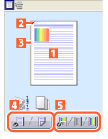
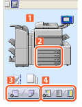

|

|
Печать N на 1
Устанавливается количество (N) страниц для печати для каждом листе бумаги.
Сшивание скрепками
Щелкните выбранное для сшивания место страницы.
Расположение переплета
Укажите расположение переплета, щелкнув соответствующий край страницы.
Переключение между односторонней и двухсторонней печатью
Переключение между цветной и черно-белой печатью (только в цветных принтерах)
|
|

|
Способы вывода/способы печати
Метод вывода (разбор/группирование) и метод печати (2 на 1 и др.) можно установить в контекстном меню.
Источники бумаги
Можно проверить заданный формат страницы и количество оставшихся листов. При выборе [Источнику бумаги] для [Выбор по] во вкладке [Источник бумаги], Вы также можете указать здесь источник бумаги.
Переключение между односторонней и двухсторонней печатью
Переключение между цветной и черно-белой печатью (только в цветных принтерах)
|